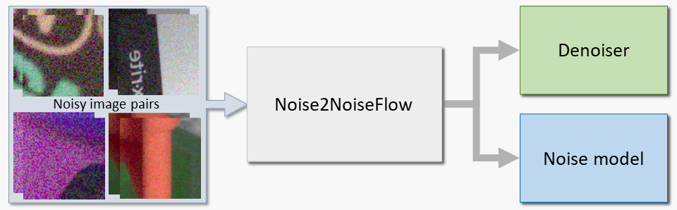

Noise2NoiseFlow: Realistic Camera Noise Modeling without Clean Images
Authors


Abstract
Image noise modeling is a long-standing problem with many applications in computer vision. Early attempts that propose simple models, such as signal-independent additive white Gaussian noise or the heteroscedastic Gaussian noise model (a.k.a., camera noise level function) are not sufficient to learn the complex behavior of the camera sensor noise. Recently, more complex learning-based models have been proposed that yield better results in noise synthesis and downstream tasks, such as denoising. However, their dependence on supervised data (i.e., paired clean images) is a limiting factor given the challenges in producing ground-truth images. This paper proposes a framework for training a noise model and a denoiser simultaneously while relying only on pairs of noisy images rather than noisy/clean paired image data. We apply this framework to the training of the Noise Flow architecture. The noise synthesis and density estimation results show that our framework outperforms previous signal-processing-based noise models and is on par with its supervised counterpart. The trained denoiser is also shown to significantly improve upon both supervised and weakly supervised baseline denoising approaches. The results indicate that the joint training of a denoiser and a noise model yields significant improvements in the denoiser.
Demo
Interactive demo comparing noise generated by Noise2NoiseFlow compared to its supervised baseline, Noise Flow, as well as Additive White Gaussian noise model, Noise-Level Function, and Calibrated Poisson-Gaussian model. Real Noise refers to the ground-truth noisy image from the SIDD dataset.
Material

Citation
@inproceedings{maleky2022noise,
title={{Noise2NoiseFlow: Realistic Camera Noise Modeling without Clean Images}},,
author={Maleky, Ali and Kousha, Shayan and Brown, Michael S. and Brubaker, Marcus A.},
booktitle={CVPR},
year={2022}
}